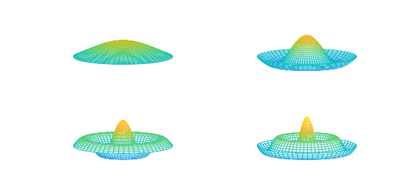

function Drum
The axisymmetric harmonic vibrations of a circular drum can be described by the ODE
$$ u''(r) + r^{-1} u'(r) = -\omega^2 u(r),~~ u'(0)=1, u(1)=0, $$
where $r$ is the radial coordinate and $\omega$ is the frequency of vibration. Only discrete positive values of $\omega$ are possible, corresponding to the eigenvalues of the differential equation.
We multiply the ODE through by $r$ to avoid a potential division by zero. This creates a generalized problem in the form $Au = \lambda Bu$.
r = chebfun('r',[0,1]);
A = chebop(0,1);
A.op = @(r,u) r.*diff(u,2) + diff(u);
A.lbc = 'neumann'; A.rbc = 'dirichlet';
B = chebop(0,1);
B.op = @(r,u) r.*u;
Then we find the eigenvalues with eigs. It turns out that the $\omega$ values are also zeros of the Bessel function $J_0$, which gives a way to valudate the results.
[V,D] = eigs(A,B);
[omega,ii] = sort(sqrt(-diag(D)));
omega
V = [V{:,ii'}];
err = omega - sort(roots( besselj(0,chebfun('r',[0 20])) ))
omega = 2.404825557952783 5.520078110503695 8.653727912947350 11.791534439015653 14.930917708489117 18.071063967908913 err = 1.0e-09 * 0.257003751613638 0.217384332756865 0.036330050079414 0.001366018409499 0.001342925770587 -0.002010835942201
We also get the eigenfunctions, which gives a way to visualize deflections of the drums for pure frequencies.
V = V*diag(sign(V(0,:))); % ensure V(0,k) > 0 [rr,tt] = meshgrid(linspace(0,1,40),linspace(0,2*pi,60)); for k = 1:4, subplot(2,2,k), mesh(rr.*cos(tt),rr.*sin(tt),repmat(V(rr(1,:),k),60,1)) zlim([-1 3]),caxis([-3 3]), view(-33,20), axis off end

If the drum instead has a variable density given by $\rho(r)$, the right- hand side of the original ODE becomes $-\omega^2\rho u$. In general, the connection to Bessel functions is broken, but we will not miss a beat using eigs.
Constant density gives $\omega_2/\omega_1 = 2.2954$. Let's design a density so that $\omega_2/\omega_1 = 2$, a perfect octave. We will search among density functions of the form
$$ \rho(r) = 1 - a\sin(\pi r). $$
Here is a function that returns the ratio for any $a$.
function ratio = evratio(a)
rho = 1 - a*sin(pi*r);
B.op = @(r,u) r.*rho.*u;
[V,D] = eigs(A,B,2,0);
[omega,ii] = sort(sqrt(-diag(D)));
V = [V{:,ii'}];
ratio = omega(2)/omega(1);
end
Now, we create a chebfun to hit the target.
ratfun = chebfun(@evratio,[0.5,1],'vectorize','eps',1e-11);
astar = find(ratfun==2)
clf, plot(ratfun), title('Eigenvalue ratio'), xlabel('a')
set(gca,'xtick',[0.5,astar,1],'ytick',[2],'xgrid','on','ygrid','on')
astar = 0.812158808549756

We compute the ratio at astar to verify the answer, and plot the eigenfunctions.
residual = evratio(astar) - 2
subplot(1,2,1), surfl(rr.*cos(tt),rr.*sin(tt),repmat(-V(rr(1,:),1),60,1))
shading interp, lighting phong, title('First mode')
subplot(1,2,2), surfl(rr.*cos(tt),rr.*sin(tt),repmat(-V(rr(1,:),2),60,1))
shading interp, lighting phong, title('Second mode')
colormap copper
residual =
-2.317701586207477e-12

end